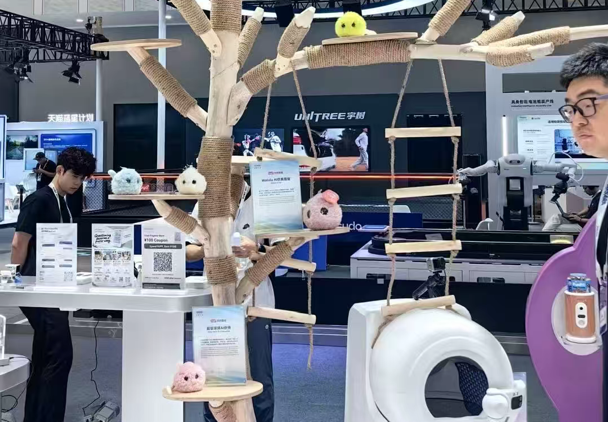

智以致用：2026 云栖大会，AI 走向 "用"
9 月 22 日至 24 日，以 "智以致用" 为主题的 2026 云栖大会在杭州举办。由阿里主办的云栖大会，是全球 AI 与云计算领域标杆盛会，也是 AI 从实验室落地产业、走进大众生活的重要窗口。本届大会首次引入 Agent Native 参会模式，智能体时代加速到来。
在 3 号馆展台，毛绒外形的超级球球 AI 儿童陪伴机器人，给出了 AI 走进普通家庭的柔软答案。
超级球球携手涂鸦智能，亮相云栖大会
超级球球是超级有爱（杭州）智能科技有限公司旗下无屏毛绒 AI 儿童机器人，搭载自研有爱 AI 心理模型，支持情绪识别、共情对话、长期记忆、触摸交互，专注儿童情绪陪伴与成长引导。
本次展会，超级球球携手涂鸦智能亮相云栖大会展台。超级球球此前已亮相 WAIC、丹麦驻沪总领事馆安徒生系列全球首发、德国IFA展会，海外市场覆盖北美、欧洲、东南亚。

携手涂鸦智能：降低 AI 陪伴硬件落地门槛
涂鸦智能提供 AI 硬件全链路平台能力，覆盖多模型接入、认证模组、ODM 匹配、全球合规与海外渠道支持，大幅缩短 AI 硬件从原型到量产周期。
超级球球深耕儿童情感陪伴，涂鸦智能赋能硬件快速量产与全球化交付，双方强强联合，把有温度的 AI 陪伴推向更多家庭。
好技术，要有温度的伙伴一起用
云栖大会已落幕，双方持续深化合作。超级球球聚焦儿童心理陪伴，坚持 “先听懂，再回应”；涂鸦智能简化 AI 硬件开发门槛，让创意快速变成可售卖产品。
“智以致用” 的内核，是让 AI 服务于人。超级球球与涂鸦智能的合作，正是有温度的 AI 陪伴落地的真实实践。